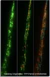
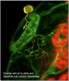

A. Creating transgenic lines in Arabidopsis and tobacco, carrying multiple targeted fluorescent markers for simultaneous multicolor live visualization of sub-cellular components. See multiple markers above and in Sinclair et. al 2006.

B. Charting single / multiple organelle localization and behaviour using 4D-imaging and tracking techniques on normally developing, non- stimulated model cells to create base line parameters.

C. Exposing wild-type plants to different abiotic (eg. temperature, salt, osmotic) and biotic (eg. wounding, bacterial / fungal infestation) stimuli. Observing conditional responses of different organelles and comparing them against the typical responses noted in non-stimulated model cells earlier.
D. Treating wild-type plants to different cytoskeletal drugs to dampen cytoskeletal dynamics and then exposing them to abiotic and biotic stimuli specified in 'C'. Observing alterations in organelle response and sub-cellular response and compare against the typical wild-type responses noted in 'A', & 'B'.
E. Exposing mutant plants (eg. for ARP2/3-complex / ROP-GTPases/ MAPs) to abiotic and biotic stimuli. Observing sub-cellular response and comparing against the typical wild-type responses noted in 'A, B & C'.
Expected outcome
Documentation of early sub-cellular response of plant cells to diverse stimuli. Identifying common molecular mechanisms that might be triggered in response to completely different environmental stimuli. Laying down the ground-work for understanding the basic laws that must be involved in the creation of order from apparent chaos: a phrase that sums up and links sub-cellular behaviour to the development of a precise cellular response.